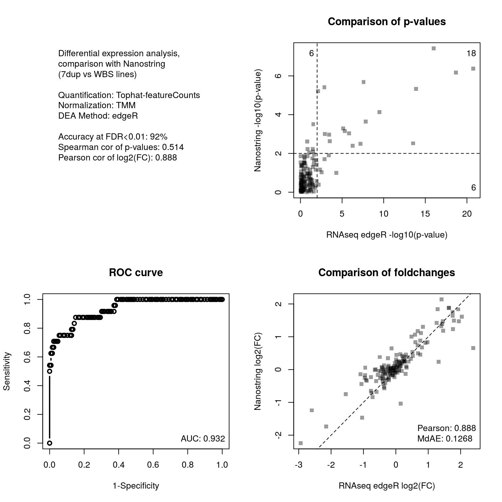
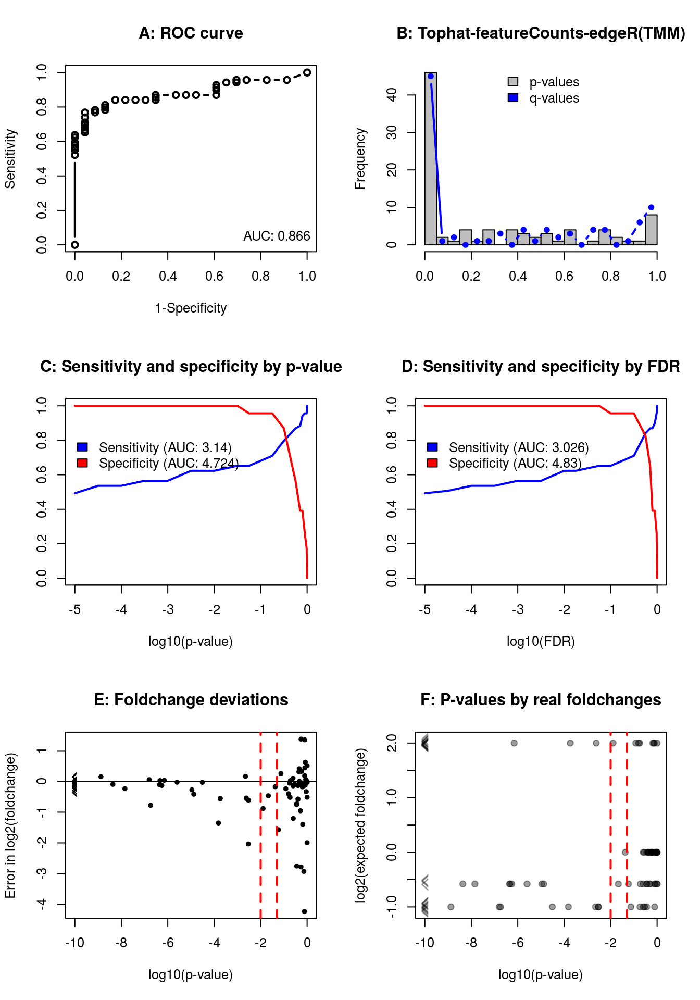
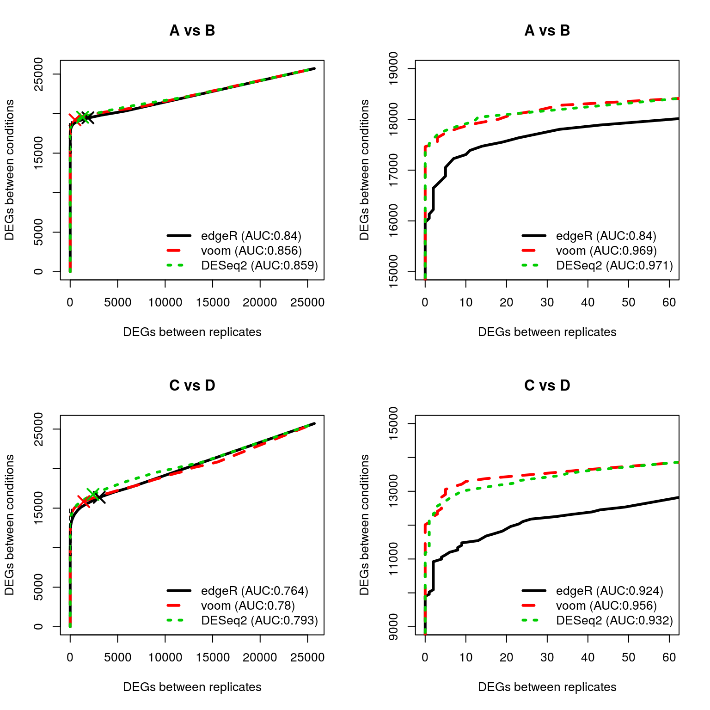

This package provides empirical and computational resources for benchmarking RNAseq analysis methods, harnessing a number of features:
This help will guide you through its main usage.
To install the package, download it and install it using the following R command:
install.packages("path/to/RNAontheBENCH.tar.gz", repos=NULL)Alternatively, if you have devtools installed you can install the package directly from the git repository using:
library(devtools)
install_git("https://github.com/plger/RNAontheBENCH")Once the package is installed, you can load it and access the vignette for some examples:
library(RNAontheBENCH)
vignette("RNAontheBENCH")The benchmark is made using a specific dataset of stranded Truseq mRNA-seq libraries (Ribozero) with 100bp paired-end reads, coming from human induced pluripotent stem cell lines harbouring copy-number alterations of the 7q11.23 region. The RNA-seq data was published in Adamo A, Atashpaz S, Germain PL et al., Nature Genetics 2015, 2:132-41, and is available through the GEO series GSE63055.
You will need to download samples GSM1538995 through GSM1539007, and quantify them using your method of choice. Specifically, the following samples should be analyzed and given the names below:
| Sample name | GEO ID |
|---|---|
| AJ80 | GSM1538995 |
| AJ81 | GSM1538996 |
| AJ82 | GSM1538997 |
| AJ83 | GSM1539001 |
| AJ84 | GSM1539002 |
| AJ86 | GSM1539003 |
| AJ87 | GSM1539004 |
| AJ89 | GSM1538999 |
| AJ90 | GSM1539005 |
| AJ91 | GSM1539006 |
| AJ92 | GSM1539007 |
| AJ93 | GSM1539008 |
For reasons of comparability, we recommend using the NCBI GRCh38 genome, more specifically the sequence file GCA_000001405.15_GRCh38_no_alt_analysis_set.fna supplemented with the sequence of the ERCC spike-ins, and the corresponding gtf file also supplemented with the spike-in annotation.
Keep in mind that the libraries are stranded (ISR in the Sailfish/Salmon nomenclature, fr-firststrand in the Tuxedo nomenclature).
For the validation dataset, the samples are the following:
| Sample name | GEO ID |
|---|---|
| CFG.sh2 | GSM1539030 |
| CFG.shCTR | GSM1539029 |
| c3391S.sh2 | GSM1539042 |
| c3391S.shCTR | GSM1539041 |
| w306o.shCTR | GSM1539037 |
| w306o.sh2 | GSM1539038 |
Finally, some functions (see below) can also be applied on the SEQC dataset. For more information on that dataset, see Su et al. (2014) “A comprehensive assessment of RNA-seq accuracy, reproducibility and information content by the Sequencing Quality Control Consortium”, Nature Biotechnology, 32(9), 903–14.
The package expects expression matrices to have refseq ID or gene symbols as row names, and sample names (e.g. `AJ80’, as indicated in the tables above) as column headers.
Expression values can be read/fragments counts, FPKM, or TPM, and will be automically converted to TPM.
If you do not provide a gene-level quantification, transcripts will automatically be summed to genes.
Benchmarking a quantification can be done using a series of functions making specific comparisons (see ?compareWithNanostring, ?analyzeSpikein, ?compareWithPCR, and ?compareSimulated), or through the benchmarkWrapper() function, which calls all other functions on the analysed datasets and wraps the results in an html page.
To avoid confusion, it is best to
w12.transcripts.quant (and eventually w12.genes.quant) for the 12-samples dataset, w6.transcripts.quant for the 6-samples dataset, and simulated.quant for the simulated data;benchmarkWrapper("folder_containing_quantification", "analysis_name", qt="FPKM")where ‘qt’ indicates the unit of the expression matrices (either ‘COUNTS’, ‘FPKM’, or ‘TPM’).
It is possible to run the benchmarkWrapper function even if only one dataset has been quantified. See ?benchmarkWrapper for an example.
The benchmarkWrapper function calls a number of functions from the package (compareWithNanostring, analyzeSpikein, compareWithPCR, and compareSimulated), each of which can be called separately for further options (please see the help entry of each function for more detail). In addition, the benchmarkWrapper function generates a html file for browsing the results of the analysis.
You can test the benchmarkWrapper function using the example data included in the package. We first load the data (two count matrices produced by featureCounts on the Tophat alignment, one for gene-level counts and the other for transcript-level), and save it in the folder in which we’ll want to save the results of the benchmark:
library("RNAontheBENCH")
data(exampledata)
dir.create("example")
write.table(exampleTranscriptLevel,"w12.transcripts.quant",sep="\t",quote=F)
write.table(exampleGeneLevel,"w12.genes.quant",sep="\t",quote=F)## Loading required package: MASS## Loading required package: edgeR## Loading required package: limma##
## Attaching package: 'RNAontheBENCH'## The following object is masked from 'package:limma':
##
## zscore(Of note, to reduce their size the matrices contain only spike-ins, genes/transcripts of the Nanostring panel, as well as features with a certain number of reads assigned to them).
Then we call the function, specifying that the expression values are counts:
benchmarkWrapper("example", "tophat.featureCount", qt="counts")A number of files will be saved in the “example” folder, including an html file allowing to browse these results.
The package also includes a number of functions to benchmark differential expression analysis methods, based either
For differential expression methods which take a count matrix as input (e.g. edgeR, DESeq, etc), functions are included which take the count matrix, run the analysis, and benchmark the results. For other methods, such as Cuffdiff, it is necessary to provide the analysis results as a data.frame with gene or transcript IDs are row.names, and with at least the columns “p” (for p-value), “log2FC”, and “fdr”.
(Note: to avoid differences due solely to FDR calculation, all comparisons are based on uncorrected p-values; moreover, where possible the TMM normalization is applied to all methods.)
To comapre differential expression calls to nanostring, you can simply use the deNanostring() function, providing your count matrix:
data(exampledata)
deNanostring( exampleGeneLevel, method="edgeR", norm="TMM",
quantification="Tophat-featureCounts")
This function performs the specified DEA analysis, and benchmarks the results by comparing them to a t-test applied to the log-transformed Nanostring measurements, using by default a p-value of 0.01 to identify a gene as differentially-expressed (this can be specified with the ‘threshold’ argument of thedeNanostring() function). The figure plotted provides some measures of accuracy, a comparison of the p-values, a comparison of the foldchanges, as well as a Receiver-Operator Characteristic (ROC) curve (and the area under it).
If you have the results from a DEA analysis performed outside R, such as from Cuffdiff, you simply need to reformat them to a data.frame with gene/transcript IDs are row.names, and with at least the columns “p” (for p-value) and “log2FC”. You can then provide it to the deNanostring.compare() to produce the same diagnostic plots.
Samples from both the datasets in this study and the SEQC dataset where spiked-in with two different mixes containing the same ERCC RNAs albeit in different concentration. These known differences can therefore be used to assess differential expression analyses. Of note, the ERCC spike-ins are neither spliced, nor overlapping any other genomic features, and as such they are more simple to map and quantify than most transcripts. However, they have the advantage of having both a very precisely known abundance and, unlike simulations (which are inevitably based on models), authentic experimental variation.
Once again, a function performs (for available methods) the differential expression call and its benchmark:
res <- deSpikein( exampleGeneLevel, method="edgeR", norm="TMM",
quantification="Tophat-featureCounts")
The function returns the differential expression calls, and produces a figure with six panels:Of note, the function can take as input either the count data from the dataset used in this study, or from the SEQC data.
All the actual benchmarking and the generation of the plots is done by the function deSpikein.compare(), which is called by the deSpikein() function. This means that you can perform the analysis yourself, or import an external one (e.g. Cuffdiff), and pass it to the function. You simple need to make sure that the data is formatted as a data.frame with gene/transcript IDs are row.names, and with at least the columns “p” (for p-value), “log2FC” and “fdr”. Note, however, that this will not used the ‘homogenized spike-in normalization’ (see below).
Sleuth users can use the sleuthWrapper() function, which performs the analysis with homogenized spike-in normalization and benchmark the results.
Spike-ins are loaded in the total RNA when preparing the libraries, and depending on the setting loading there can be variations in loading. For this reason, all spike-in based benchmarks in this package normalize the spike-ins separately from the rest of the transcriptome. Since a considerabe proportion of the spike-ins are differentially-expressed across mixes, the spike-in mixes are “homogenized” for the purpose of calculating normalization factors (dividing the quantifications by their expected foldchange; see ?homomixes). If you want to disable this feature, simply perform the differential analysis yourself, and use the deSpikein.compare() function.
The SEQC dataset includes transcriptomes from two different cell lines (“A” and “B”), as well as from two mixtures of those cell lines (“C” and “D”), each with 5 replicates. Contrarily to the two previous cases, here the truth of differential expression is not known, and the working assumption behind this dataset is that a detected differential expression between groups (i.e. cell-lines or mixtures) is putatively true, while a detected differential expression within groups (i.e. between replicates of a given sample) is a false positive. Plotting the number of genes in both comparisons that a below a sliding p-value threshold therefore gives a picture analogous to the ROC curve, which in the context of this package we’ll call a “positives curve”.
Given the relevant comparisons, such curves can be produced by the posplot() function (see ?posplot for more information). Alternatively, additional functions take care of generating the relevant comparisons and plotting the results: see especially ?seqc.diff and ?seqc.diff.plot. Here, we’ll showcase these functions using the seqc.diff.example() function, which fetches an existing quantification from the seqc package, performs the relevant comparisons using three DEA methods, and plots the results. Alternatively, you could use your own quantification of the SEQC data (see ?seqc.diff and ?seqc.diff.example).
seqc.diff.example()
## Loading required package: seqc
## # Fetching and preparing SEQC data from the BGI site...
##
## # edgeR
## # Running background differential expression analyses
## A(1, 2, 3) vs A(4, 5)
## B(1, 2, 3) vs B(4, 5)
## C(1, 2, 3) vs C(4, 5)
## D(1, 2, 3) vs D(4, 5)
## # Running differential expression analysis A vs B
## # Running differential expression analysis C vs D
##
## # voom
## # Running background differential expression analyses
## A(1, 2, 3) vs A(4, 5)
## B(1, 2, 3) vs B(4, 5)
## C(1, 2, 3) vs C(4, 5)
## D(1, 2, 3) vs D(4, 5)
## # Running differential expression analysis A vs B
## # Running differential expression analysis C vs D
##
## # DESeq2
## # Running background differential expression analyses
## A(1, 2, 3) vs A(4, 5)
## B(1, 2, 3) vs B(4, 5)
## C(1, 2, 3) vs C(4, 5)
## D(1, 2, 3) vs D(4, 5)
## # Running differential expression analysis A vs B
## # Running differential expression analysis C vs D
## Producing plots for A vs B comparison
## Producing plots for C vs D comparison
The function produces 4 plots, the right-hand ones being simply a zoom-in of the left ones. The top row represents the comparison between cell lines A and B, which the bottom row represents the comparison of C and D, which are two different mixtures of cell lines A and B. The results can be roughly read as a ROC curve, with the important caveat that true positives are simply assumed to be true.Of note, the cell lines are very different from one another, and the high degree of replication makes this a rather simple task for differential expression analysis. For this reason, we would recommend concentrating on the (slightly more subtle) C vs D comparison, and eventually to reduce the number of replicates used. This can all be done using the between.groups and inner.groups paramters of the seqc.diff() and seqc.diff.example() functions (see ?seqc.diff). The default parameter values between.groups=1:5, inner.groups=list(c(1,2,3),c(4,5)) indicate that replicates 1 to 5 will be used for comparison between groups, while for comparison within group replicates c(1,2,3) will be compared to replicates c(4,5) in each group.
Please report issues on the github repository.